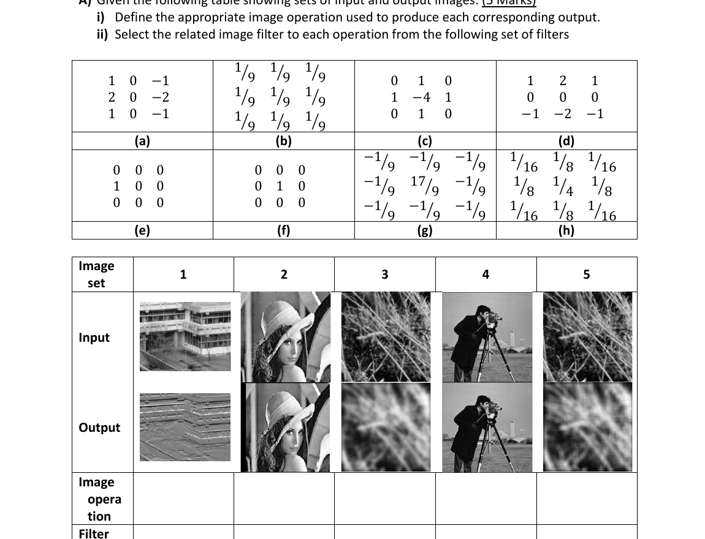

Q1 · Part A — Match each input→output to its kernel (5 marks)
Question (as printed)

Solution — first read the kernels
Eight kernels (a)–(h). Memorise the signatures:
- (a) [[1,0,−1],[2,0,−2],[1,0,−1]] → Sobel-x (vertical edges, gradient in x).
- (b) all 1/9 → 3×3 box blur (mean filter).
- (c) [[0,1,0],[1,−4,1],[0,1,0]] → Laplacian (edge detector).
- (d) [[1,2,1],[0,0,0],[−1,−2,−1]] → Sobel-y (horizontal edges, gradient in y).
- (e) [[0,0,0],[1,0,0],[0,0,0]] → shift-right (the centre value gets replaced by the pixel to its left).
- (f) [[0,0,0],[0,1,0],[0,0,0]] → impulse / identity (does nothing).
- (g) [[−1,−1,−1],[−1,17,−1],[−1,−1,−1]]/9 → unsharp-mask / sharpening (Laplacian + identity scaled).
- (h) [[1,2,1],[2,4,2],[1,2,1]]/16 → Gaussian smoothing.
Now read each input → output column
| Set | What happened input → output | Operation | Filter |
|---|---|---|---|
| 1 (building) | Horizontal edges popped, flat regions went grey. | Gradient in y | (d) Sobel-y |
| 2 (Lena) | Image is the same, just translated one pixel. | Shift right | (e) shift kernel |
| 3 (grass) | Texture smoothed / softened uniformly. | Box-blur smoothing | (b) 1/9 averaging |
| 4 (camera-man) | Output identical to input. | Impulse / identity | (f) centre = 1 |
| 5 (grass again) | Smoother than box-blur, edges preserved a bit. | Gaussian smoothing | (h) 1/16·Gaussian |
Official key:
- Gradient in Y direction → (d)
- Shift Right → (e)
- Box Blur → (b)
- Impulse → (f)
- Gaussian smoothing → (h)